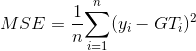
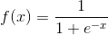
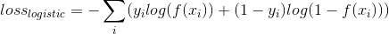
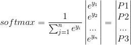
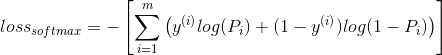
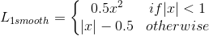
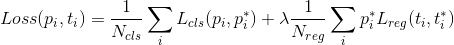
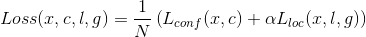
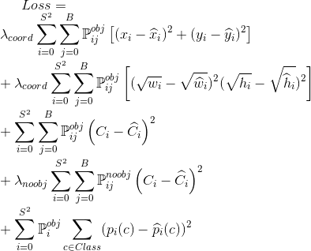

By Nhan December 22, 2018
In this post I will note some popular loss function using for training neural network. The last part reviews some loss functions presented in popular papers for object detection.
1. What is the loss function?
Loss function (or objective function) decide how well the output of a neural network. Rely on loss function, optimizer does the corresponding way to train the weight factors, or together with other parameters (as learng rate, batch size, weight initialization, data preprocessing, etc) it know somehow to adjust weight factors to get the optimized values to reach the designed target.
When we design a neural network (NN) to classifying, detecting, encoding or decoding, the outputs are expectation of the NN producing after a feed forward step. At the very beginning, the uncomplete trained weights normally generate totally wrong outputs. Under supervised training style, we can calculate the error between these outputs and the ground truth values by a math function, here we name the error as loss value and math function as loss function. Scientists designed many kind of loss function. The reasons are nothing to cope with specific situations. For example, if our output are scalar 0 or 1, we need logistic entropy loss function. OR if our outputs are in a probability relationship with a softmax, we can use softmax-based loss.
Apparently, we need to select the suitable loss function to your expected outputs.
2. Basic loss
2.1 Mean Square error

Mean square error compares the outputs to ground truths to account the loss. Why square? Ones may think it is to blow up the error or amplify the difference between the expectation and the truths. The training process needs large error to ‘train’ the model by corresponding large gradients.
However, there is an another meaning behind the exponent. MSE is the second moment which is related closely to variance and the bias of set of predictions. Therefore, if the loss can be reduced, we should have a model predicting the outputs same or closely to the distribution of labels.
2.2 Logistic entropy loss
Logistic function

The logistic function is to answer the Y/N question.
- 1 is Yes
- 0 is No
So, we can use it to classify binary problem as determining whether the input belongs to class A or not.

Cross-entropy logistic is to calculate the error for binary problem. The trained model should produce large probability in case input in ‘1’ class, and small probability in case input in ‘0’ class. The punishment on answer NO helps the set of coefficients differentiating better the No case.
2.3 Softmax entropy loss
Softmax is usually used to classify a sample to multiple classes, the sample is classified to class with highest probability.

Softmax function calculate the probability of classes that a sample could be classified. The normalize denominator is sum of all predictions. So, sum of all probabilities is equal to ‘1’. Normally, the highest score decides the class of sample.

Cross-entropy softmax is a popular formula to calculate error for training with softmax function. As logistic entropy loss, the entropy styles increase the loss at truth position and reudces at not-truth positons.
2.4 L1 smooth loss

L1 smooth loss is a special case of huber loss Huber loss. When |x| is greater than 1, the gradient is stably equal to ‘1’. Inversely, it is smaller depending value of |x| when |x| is less than ‘1’. It means when the input is small, the loss will be reduced more slowly.
2.5 Others
Hinge loss is popular for maximum margin problem, applied common in SVMs.
3. Loss function review
Following review three popular CNN-based detectors. A detector does two tasks simultaneously (localization and classification) in forward step. For example, it can identify a bounding box of objects and call exactly name for each object.
Normally, a detector constructs from a base net (say, a CNN-based feature extraction) and a regression part (box regressor and classifier). The base net inherits from welknown, trained net as VGG, ResNet, DenseNet, Inception, etc. They are classifiers and are trained with very complex dataset as ImageNet-1000 and excluding the output layer. The output of base net is a layer of feature maps. The second part uses these features to locate object position, its size by a rectangular shape (regressor), and a corresponding class prediction (classifier).
To train that such CNN architectures, the loss functions are usually a combination of regressor and classifier. Below papers follow this scheme and the final loss is sum of weight losses.
3.1 Paper: Faster RCNN

3.2 Paper: SSD

3.3. Paper: YOLOv1
